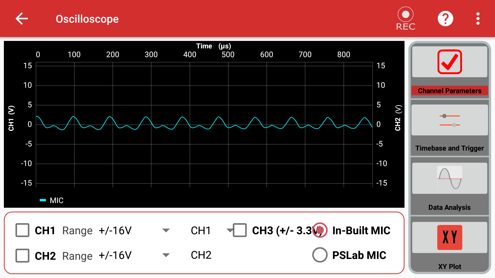
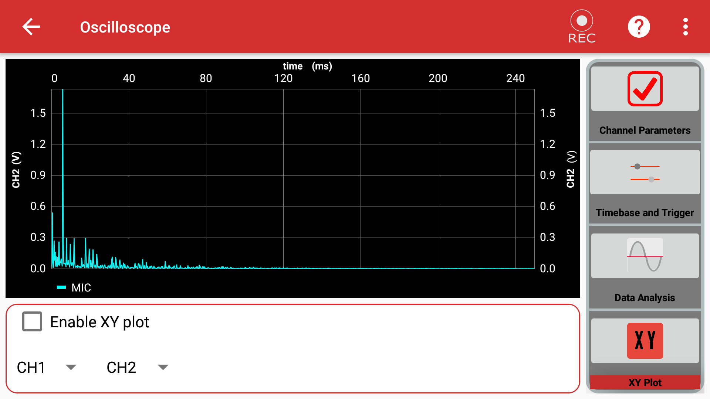
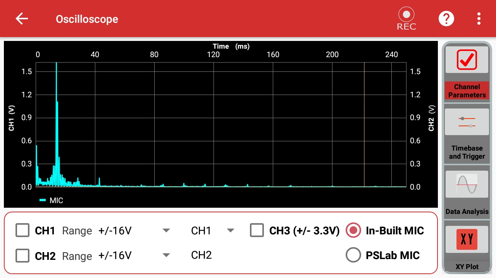

Oscilloscope¶
An oscilloscope is an essential scientific instrument used to observe and measure voltage changes over a period of time in real time. It allows you to visualize the exact shape of an electrical wave.


How To Use It¶
You can use the oscilloscope to measure both analog and digital signals generated by the PSLab or external circuits.
- Connect the Pins:
- Analog mode: Connect the
SI1andSI2pins on the PSLab board to theCH1andCH2pins respectively. - Digital mode: Connect the
SQ1,SQ2,SQ3pins to theCH1,CH2,CH3pins respectively. - Generate a Wave: Go to the Wave Generator instrument in the PSLab app.
- Select either Digital or Analog mode.
- Set your desired frequency, phase, and duty values for Wave1/Wave2 (Analog) or SQ1/SQ2/SQ3 (Digital).
- Exit the Wave Generator and open the Oscilloscope instrument in the PSLab app.
- Select any combination of the
CH1,CH2,CH3checkboxes to see the waves generated at each channel. - Adjust Timebase: Change the timebase of the waves from the Trigger and Timebase section on the control panel.
- XY Plot: Plot waves against each other from the XY-Plot section.
- Data Analysis: View the results of a Fourier transform or curve fitting from the Data Analysis section.
- Microphone Input: You can use the built-in microphone of your device as an input by selecting the IN-BUILT MIC option on the main screen.
- Record Data: Use the record button to capture the currently generated waves, store the data in a CSV file, and play it back at will.
Experiment: Measure Sound Intensity¶
Goal of the experiment: To measure the intensity of sound produced using your device's built-in microphone.
Materials Required¶
- Your Phone or Computer
- The PSLab App installed
Procedure¶
-
Open the PSLab app.
-
Select the Oscilloscope instrument.
- On opening the app, you will see various configuration sections:
- Channel Parameters
- Timebase and Trigger
- Data Analysis
- XY Plot
-
Open Channel Parameter and select the In-Built MIC option.
-
Next, open the Data Analysis menu and select Fourier Transforms.
- Try recording different sounds (whistling, clapping, speaking) using the built-in record option.
Observations¶
On observing the recorded sound from the logs, you will notice a large displacement (amplitude) in the graph for loud sounds, and a smaller displacement for faint sounds. The frequency will change based on the pitch.
High Pitch

Low Pitch
Conclusion¶
From the above experiment, we can conclude that the PSLab app's Oscilloscope can be reliably used to measure both the intensity and frequency characteristics of sound.